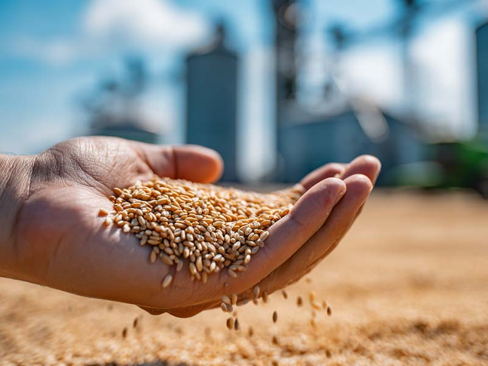

Dekso International
Your Strategic Partner in Global Commodities
Your Strategic Partner in Global Commodities
Nearly two decades of experience connecting buyers with reliable suppliers across agricultural, food, scrap, and specialty commodity markets.
Every transaction is guided by transparency, trust, and long-term relationships — ensuring clients receive exactly what they need, not just what is available.
Ability to source a wide range of commodities — from grains and dairy to scrap and specialty materials — including custom and hard-to-find items.
End-to-end coordination: quality checks, compliance paperwork, export/import documentation, and international shipment management.
Long-standing relationships with producers, processors, and exporters around the world, enabling competitive pricing and consistent availability.
Clear communication, quick turnaround on quotes, and dependable follow-through — ensuring smooth transactions and repeat confidence.

Dekso International LLC is a California-based brokerage firm facilitating the worldwide trade of bulk commodities. Since 2007, we have connected producers with buyers across core sectors below:
Leveraging nearly two decades of logistics experience and strong supplier relationships, we ensure your procurement needs are met with speed and integrity.